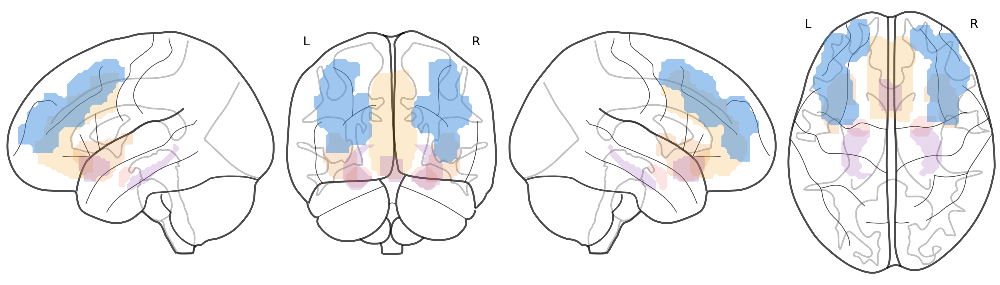
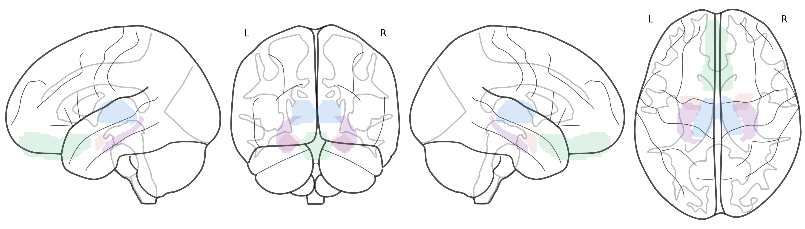
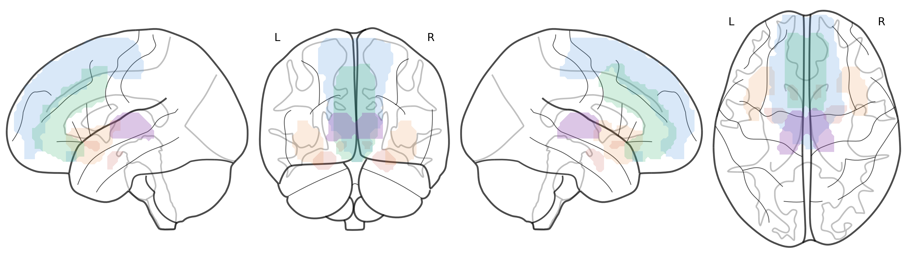
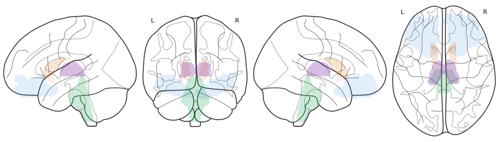
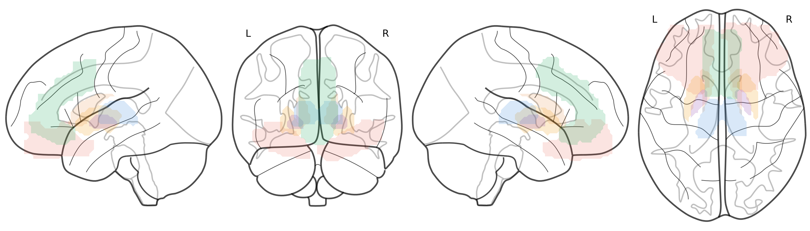

SN (orange) · DMN (violet) · CEN dim (bleu)
Amygdale (rouge) · Thalamus · vmPFC (vert) · Hippo (teal)
BNST proxy (orange) · Insula · mPFC (or) · dACC (rouge)
VTA (vert) · NAcc · OFC (bleu) · Caudé (teal) · Thal (gris)
OFC (or) · Caudé · Putamen (rouge) · Pallidum (violet) · Thal